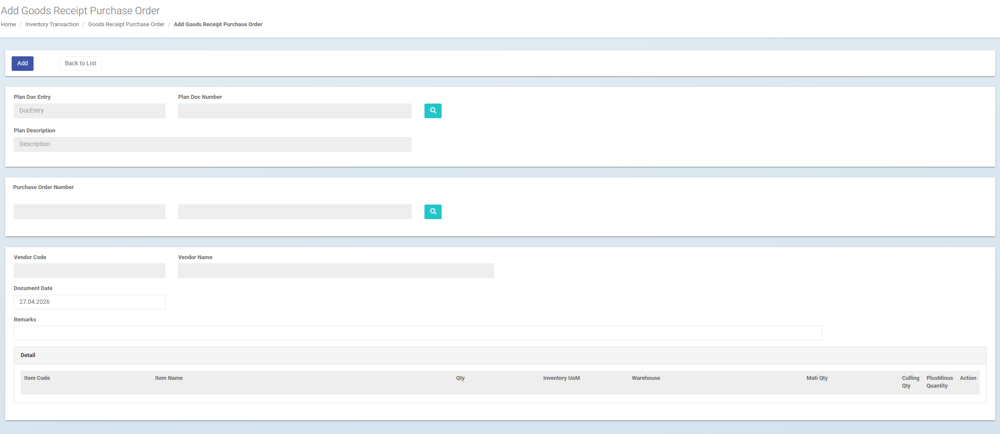
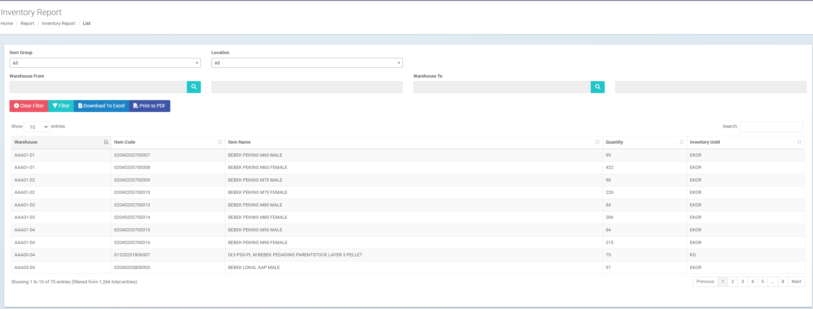
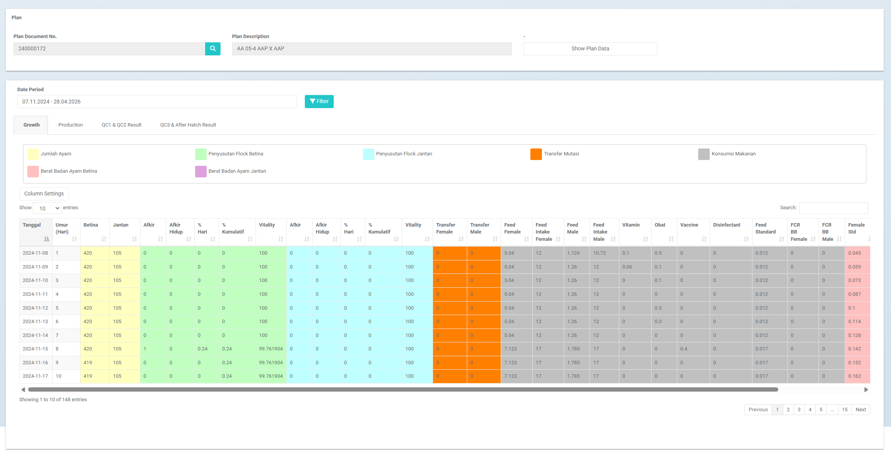

iFLOCS
iFLOCS adalah sistem operasional farm untuk membantu perusahaan peternakan ayam mengontrol transaksi inventory, perpindahan stok, pemakaian pakan/obat/vitamin, report per phase, dan performa flock dalam satu aplikasi web yang siap diintegrasikan dengan SAP.
Masalah Operasional Farm yang Sering Menghambat Kontrol Bisnis
Di bisnis peternakan ayam, data stok, pakan, obat, vitamin, populasi, produksi, dan performa phase harus terbaca cepat. Jika data tersebar, manajemen sulit menilai apakah masalah berasal dari operasional farm, inventory, atau biaya yang belum tercatat rapi.
Transaksi Farm, Report Operasional, dan KPI dalam Satu Sistem
iFLOCS memusatkan inventory transaction, stock reporting, report per phase, dan dashboard KPI agar data operasional farm dapat dipakai oleh supervisor, manajemen, finance, dan SAP.
Inventory Transaction
Modul untuk mengontrol penerimaan barang dari PO, transfer antar warehouse, goods issue, dan pergerakan material farm seperti pakan, obat, vitamin, dan item operasional lain.
Report
Modul laporan untuk membaca saldo inventory, report per phase, growth, production, QC result, hatch result, feed intake, vitality, FCR, dan data operasional farm.
Dashboard KPI
Modul monitoring untuk membantu manajemen melihat indikator utama farm, stock accuracy, pemakaian material, performa phase, dan akses data berdasarkan otorisasi user.
Fungsi Modul iFLOCS
Fungsi iFLOCS dikelompokkan untuk membantu user farm, supervisor, finance, dan manajemen mengelola transaksi inventory, laporan operasional, KPI, otorisasi, dan integrasi SAP.
Inventory Transaction
Mengelola transaksi material farm dari penerimaan barang sampai pemakaian operasional.
- Goods Receipt PO untuk penerimaan barang dari purchase order.
- Transfer In dan Transfer Out antar warehouse atau lokasi farm.
- Goods Issue untuk pemakaian pakan, obat, vitamin, dan material farm.
- Traceability per item, warehouse, quantity, UoM, dokumen, dan user.
Inventory Report
Memberikan visibilitas stok berdasarkan lokasi dan item agar tim farm dan finance membaca data yang sama.
- Stock per warehouse, item group, item code, dan item name.
- Quantity dan inventory UoM untuk kebutuhan kontrol stok.
- Filter berdasarkan lokasi dan range data tertentu.
- Output laporan untuk Excel, PDF, dan kebutuhan rekonsiliasi.
Report Per Phase
Membantu supervisor dan manajemen membaca performa operasional berdasarkan plan, periode, dan phase.
- Growth, production, QC1 & QC2 result, serta QC3 & after hatch result.
- Feed intake, vitamin, obat, vaccine, disinfectant, dan material treatment.
- Vitality, FCR, body weight, populasi, transfer mutasi, dan indikator phase.
- Perbandingan data harian untuk melihat deviasi performa lebih cepat.
Authorization & Access Control
Membatasi akses data agar setiap user hanya melihat area yang menjadi tanggung jawabnya.
- Hak akses berdasarkan role, plan, farm, warehouse, dan report.
- User farm hanya melihat data operasional yang relevan.
- Supervisor dan manajemen dapat diberi akses sesuai level otorisasi.
- Mendukung kontrol data untuk kebutuhan multi farm dan multi lokasi.
Dashboard KPI
Menyediakan indikator utama agar kondisi farm dan inventory dapat dimonitor lebih cepat.
- Stock accuracy, item movement, dan pemakaian material.
- Feed usage, vitality, FCR, body weight, dan performa phase.
- Ringkasan operasional untuk supervisor, finance, dan manajemen.
- Early warning untuk deviasi stok atau performa farm.
SAP Integration
Menghubungkan transaksi farm dengan sistem ERP agar inventory, costing, dan reporting lebih rapi.
- Goods receipt dari PO, inventory transfer, dan goods issue.
- Cost allocation ke farm, plan, phase, project, atau cost center.
- Data operasional siap dipakai untuk finance dan accounting.
- Reporting SAP dapat membaca data farm dengan struktur yang lebih konsisten.
Tampilan Aplikasi iFLOCS
Beberapa tampilan utama iFLOCS menunjukkan bagaimana transaksi farm, stock reporting, report per phase, dan performa operasional dapat dipantau dalam satu aplikasi.
Goods Receipt Purchase Order
Memperlihatkan proses penerimaan barang dari purchase order ke warehouse farm dengan referensi dokumen yang jelas.

Inventory Report
Menampilkan saldo stok per warehouse, item, quantity, dan UoM untuk membantu kontrol stock accuracy.

Report Per Phase
Membantu manajemen membaca growth, production, feed intake, FCR, body weight, vitality, dan hasil QC dalam satu report.

Workflow Operasional iFLOCS
Alur ini menggambarkan bagaimana transaksi inventory dan data phase farm bergerak dari operasional lapangan sampai menjadi report yang siap dipakai manajemen dan SAP.
Integrasi SAP untuk Kontrol Inventory dan Costing Farm
iFLOCS dapat diposisikan sebagai aplikasi operasional yang menangkap data farm, dan SAP menjadi sistem utama untuk inventory, accounting, purchasing, dan financial reporting.
Output yang Dibutuhkan Manajemen
Integrasi membuat data farm tidak berhenti sebagai input operasional, tetapi menjadi bahan evaluasi bisnis.
Stock Accuracy
Manajemen melihat saldo dan pergerakan stok berdasarkan warehouse, item, dan satuan.
Cost Visibility
Pemakaian material farm dapat dikaitkan dengan biaya dan performa operasional.
Audit Trail
Setiap transaksi memiliki referensi dokumen, lokasi, item, quantity, dan user input.
Business Reporting
Data operasional dan financial dapat disiapkan untuk dashboard, Excel, PDF, atau SAP report.
Nilai Bisnis iFLOCS untuk Perusahaan Farm
iFLOCS membantu perusahaan mengubah transaksi farm yang detail menjadi informasi yang bisa dipakai untuk kontrol stok, performa phase, costing, dan keputusan operasional.
Stock Lebih Akurat
Barang masuk, keluar, dan transfer lebih mudah ditelusuri sehingga selisih stok dapat ditekan.
Pemakaian Material Terkontrol
Pakan, obat, vitamin, vaccine, dan item farm lain dapat dikaitkan dengan plan atau phase.
Report Phase Lebih Cepat
Growth, production, feed intake, vitality, FCR, dan body weight dapat dibaca dalam format yang konsisten.
Data Lebih Aman
Otorisasi membatasi akses berdasarkan role, plan, farm, warehouse, atau report sehingga user hanya melihat data yang relevan.
Finance Lebih Siap
Data inventory dan transaksi farm menjadi lebih rapi untuk integrasi SAP dan proses costing.
Siap untuk Multi Farm
Struktur warehouse, plan, phase, report, dan otorisasi dapat dikembangkan untuk kebutuhan multi lokasi.
Roadmap Implementasi
Implementasi iFLOCS dapat dimulai dari area yang paling kritikal, lalu diperluas ke proses farm dan integrasi SAP secara bertahap.
iFLOCS Membantu Farm Mengubah Data Operasional Menjadi Kontrol Bisnis
Dengan iFLOCS, perusahaan peternakan dapat membangun proses inventory dan reporting farm yang lebih rapi, terukur, dan siap terhubung ke SAP untuk mendukung keputusan manajemen.